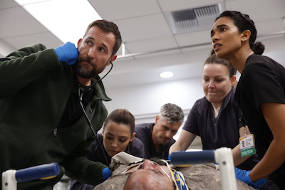

About This Guy

This is a Rick. Poster Children is an American indie rock band formed at the University of Illinois Urbana-Champaign in 1987. They have issued nine studio albums and two EPs. Known for their strong DIY ethic, the band members continue to drive their own tour bus, create their own artwork and T-shirt designs, and operate their own record label. Poster Children were also pioneers in several forms of electronic technology relating to performance art, including enhanced CDs, webcasts, and blogs. Rick Valentin and Rose Marshack met in the mid-eighties at the University of Illinois and formed several bands in rapid succession. When the two met drummer Shannon Drew in 1987, their like-minded enthusiasm sparked the beginning of a new band, dubbed Poster Children. As Valentin explained in November 1991: "When I started listening to bands that weren't on Top 40 radio, I realized there could be music I liked that isn't really polished and shiny... There was this whole other world where people who just like music could just start a band and just play. You didn't have to be great. You could make up for technical talent with energy and directness. It was the realization that 'Hey, I can do this.'" —Rick Valentin, in The New York Times, 1991
This is a Rick. Since 2012 Rick Valentin also fronts a solo project named Thoughts Detecting Machines (TDM). Under this project he has released two EP's titled An Introduction to (2012); and Forget (2013), along with two albums Work the Circuits (2015) and Sound, Noise, & You (2019). When he performs live under this project, he places three screens vertically in front of himself onstage. The contents of each screen is provided by a camera placed behind each screen, which point at him while he plays guitar and sings along with backing tracks via laptop.